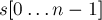
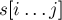
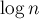
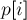
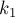

MAXimal
добавлено: 22 Jun 2008 13:37
редактировано: 1 Oct 2012 12:46
Содержание [скрыть]
Суффиксный массив
Дана строка  длины  .
.
 -ым суффиксом строки называется подстрока ,
-ым суффиксом строки называется подстрока ,  .
.
Тогда суффиксным массивом строки  называется перестановка индексов суффиксов
называется перестановка индексов суффиксов ![p[0 \ldots n-1]](../tex2png/cache/9ff50b5f8fed0fbedd5d2edbbbd08679.png) , , которая задаёт порядок суффиксов в порядке лексикографической сортировки. Иными словами, нужно выполнить сортировку всех суффиксов заданной строки.
, , которая задаёт порядок суффиксов в порядке лексикографической сортировки. Иными словами, нужно выполнить сортировку всех суффиксов заданной строки.
Например, для строки суффиксный массив будет равен:
Построение за 
Строго говоря, описываемый ниже алгоритм будет выполнять сортировку не суффиксов, а циклических сдвигов строки. Однако из этого алгоритма легко получить и алгоритм сортировки суффиксов: достаточно приписать в конец строки произвольный символ, который заведомо меньше любого символа, из которого может состоять строка (например, это может быть доллар или шарп; в языке C в этих целях можно использовать уже имеющийся нулевой символ).
Сразу заметим, что поскольку мы сортируем циклические сдвиги, то и подстроки мы будем рассматривать циклические: под подстрокой , когда j">, понимается подстрока . Кроме того, предварительно все индексы берутся по модулю длины строки (в целях упрощения формул я буду опускать явные взятия индексов по модулю).
Рассматриваемый нами алгоритм состоит из примерно  фаз. На  -ой фазе () сортируются циклические подстроки длины
-ой фазе () сортируются циклические подстроки длины  . На последней,
. На последней,  -ой фазе, будут сортироваться подстроки длины
-ой фазе, будут сортироваться подстроки длины  , что эквивалентно сортировке циклических сдвигов.
, что эквивалентно сортировке циклических сдвигов.
На каждой фазе алгоритм помимо перестановки индексов циклических подстрок будет поддерживать для каждой циклической подстроки, начинающейся в позиции с длиной , номер класса эквивалентности, которому эта подстрока принадлежит. В самом деле, среди подстрок могут быть одинаковые, и алгоритму понадобится информация об этом. Кроме того, номера классов эквивалентности будем давать таким образом, чтобы они сохраняли и информацию о порядке: если один суффикс меньше другого, то и номер класса он должен получить меньший. Классы будем для удобства нумеровать с нуля. Количество классов эквивалентности будем хранить в переменной .
Приведём пример. Рассмотрим строку . Значения массивов ![p[]](../tex2png/cache/f41743bb1304c4dfaee1474862f9de80.png) и на каждой стадии с нулевой по вторую таковы:
и на каждой стадии с нулевой по вторую таковы:
Стоит отметить, что в массиве возможны неоднозначности. Например, на нулевой фазе массив мог равняться: . То, какой именно вариант получится, зависит от конкретной реализации алгоритма, но все варианты одинаково правильны. В то же время, в массиве никаких неоднозначностей быть не могло.
Перейдём теперь к построению алгоритма. Входные данные:
char *s; // входная строка int n; // длина строки // константы const int maxlen = ...; // максимальная длина строки const int alphabet = 256; // размер алфавита, <= maxlen
На нулевой фазе мы должны отсортировать циклические подстроки длины  , т.е. отдельные символы строки, и разделить их на классы эквивалентности (просто одинаковые символы должны быть отнесены к одному классу эквивалентности). Это можно сделать тривиально, например, сортировкой подсчётом. Для каждого символа посчитаем, сколько раз он встретился. Потом по этой информации восстановим массив . После этого, проходом по массиву и сравнением символов, строится массив .
, т.е. отдельные символы строки, и разделить их на классы эквивалентности (просто одинаковые символы должны быть отнесены к одному классу эквивалентности). Это можно сделать тривиально, например, сортировкой подсчётом. Для каждого символа посчитаем, сколько раз он встретился. Потом по этой информации восстановим массив . После этого, проходом по массиву и сравнением символов, строится массив .
int p[maxlen], cnt[maxlen], c[maxlen]; memset (cnt, 0, alphabet * sizeof(int)); for (int i=0; i<n; ++i) ++cnt[s[i]]; for (int i=1; i<alphabet; ++i) cnt[i] += cnt[i-1]; for (int i=0; i<n; ++i) p[--cnt[s[i]]] = i; c[p[0]] = 0; int classes = 1; for (int i=1; i<n; ++i) { if (s[p[i]] != s[p[i-1]]) ++classes; c[p[i]] = classes-1; }
Далее, пусть мы выполнили  -ю фазу (т.е. вычислили значения массивов и для неё), теперь научимся за
-ю фазу (т.е. вычислили значения массивов и для неё), теперь научимся за  выполнять следующую, -ю, фазу. Поскольку фаз всего
выполнять следующую, -ю, фазу. Поскольку фаз всего  , это даст нам требуемый алгоритм с временем
, это даст нам требуемый алгоритм с временем  .
.
Для этого заметим, что циклическая подстрока длины состоит из двух подстрок длины  , которые мы можем сравнивать между собой за
, которые мы можем сравнивать между собой за  , используя информацию с предыдущей фазы — номера классов эквивалентности. Таким образом, для подстроки длины , начинающейся в позиции , вся необходимая информация содержится в паре чисел (повторимся, мы используем массив с предыдущей фазы).
, используя информацию с предыдущей фазы — номера классов эквивалентности. Таким образом, для подстроки длины , начинающейся в позиции , вся необходимая информация содержится в паре чисел (повторимся, мы используем массив с предыдущей фазы).
Это даёт нам весьма простое решение: отсортировать подстроки длины просто по этим парам чисел, это и даст нам требуемый порядок, т.е. массив . Однако обычная сортировка, выполняющаяся за время , нас не устроит — это даст алгоритм построения суффиксного массива с временем  (зато этот алгоритм несколько проще в написании, чем описываемый ниже).
(зато этот алгоритм несколько проще в написании, чем описываемый ниже).
Как быстро выполнить такую сортировку пар? Поскольку элементы пар не превосходят , то можно выполнить сортировку подсчётом. Однако для достижения лучшей скрытой в асимптотике константы вместо сортировки пар придём к сортировке просто чисел.
Воспользуемся здесь приёмом, на котором основана так называемая цифровая сортировка: чтобы отсортировать пары, отсортируем их сначала по вторым элементам, а затем — по первым элементам (но уже обязательно стабильной сортировкой, т.е. не нарушающей относительного порядка элементов при равенстве). Однако отдельно вторые элементы уже упорядочены — этот порядок задан в массиве от предыдущей фазы. Тогда, чтобы упорядочить пары по вторым элементам, надо просто от каждого элемента массива отнять — это даст нам порядок сортировки пар по вторым элементам (ведь даёт упорядочение подстрок длины , и при переходе к строке вдвое большей длины эти подстроки становятся их вторыми половинками, поэтому от позиции второй половинки отнимается длина первой половинки).
Таким образом, с помощью всего лишь вычитаний от элементов массива мы производим сортировку по вторым элементам пар. Теперь надо произвести стабильную сортировку по первым элементам пар, её уже можно выполнить за с помощью сортировки подсчётом.
Осталось только пересчитать номера классов эквивалентности, но их уже легко получить, просто пройдя по полученной новой перестановке и сравнивая соседние элементы (опять же, сравнивая как пары двух чисел).
Приведём реализацию выполнения всех фаз алгоритма, кроме нулевой. Вводятся дополнительно временные массивы и ( — содержит перестановку в порядке сортировки по вторым элементам пар, — новые номера классов эквивалентности).
int pn[maxlen], cn[maxlen]; for (int h=0; (1<<h)<n; ++h) { for (int i=0; i<n; ++i) { pn[i] = p[i] - (1<<h); if (pn[i] < 0) pn[i] += n; } memset (cnt, 0, classes * sizeof(int)); for (int i=0; i<n; ++i) ++cnt[c[pn[i]]]; for (int i=1; i<classes; ++i) cnt[i] += cnt[i-1]; for (int i=n-1; i>=0; --i) p[--cnt[c[pn[i]]]] = pn[i]; cn[p[0]] = 0; classes = 1; for (int i=1; i<n; ++i) { int mid1 = (p[i] + (1<<h)) % n, mid2 = (p[i-1] + (1<<h)) % n; if (c[p[i]] != c[p[i-1]] || c[mid1] != c[mid2]) ++classes; cn[p[i]] = classes-1; } memcpy (c, cn, n * sizeof(int)); }
Этот алгоритм требует времени и памяти. Впрочем, если учитывать ещё размер алфавита, то время работы становится , а размер памяти — .
Применения
Нахождение наименьшего циклического сдвига строки
Вышеописанный алгоритм производит сортировку циклических сдвигов (если к строке не приписывать доллар), а потому ![p[0]](../tex2png/cache/13298d26b66ed695fab4fc3fc1f1dbd0.png) даст искомую позицию наименьшего циклического сдвига. Время работы — .
даст искомую позицию наименьшего циклического сдвига. Время работы — .
Поиск подстроки в строке
Пусть требуется в тексте  искать строку в режиме онлайн (т.е. заранее строку нужно считать неизвестной). Построим суффиксный массив для текста за . Теперь подстроку будем искать следующим образом: заметим, что искомое вхождение должно быть префиксом какого-либо суффикса . Поскольку суффиксы у нас упорядочены (это даёт нам суффиксный массив), то подстроку можно искать бинарным поиском по суффиксам строки. Сравнение текущего суффикса и подстроки внутри бинарного поиска можно производить тривиально, за . Тогда асимптотика поиска подстроки в тексте становится .
искать строку в режиме онлайн (т.е. заранее строку нужно считать неизвестной). Построим суффиксный массив для текста за . Теперь подстроку будем искать следующим образом: заметим, что искомое вхождение должно быть префиксом какого-либо суффикса . Поскольку суффиксы у нас упорядочены (это даёт нам суффиксный массив), то подстроку можно искать бинарным поиском по суффиксам строки. Сравнение текущего суффикса и подстроки внутри бинарного поиска можно производить тривиально, за . Тогда асимптотика поиска подстроки в тексте становится .
Сравнение двух подстрок строки
Требуется по заданной строке , произведя некоторый её препроцессинг, научиться за отвечать на запросы сравнения двух произвольных подстрок (т.е. проверка, что первая подстрока равна/меньше/больше второй).
Построим суффиксный массив за , при этом сохраним промежуточные результаты: нам понадобятся массивы от каждой фазы. Поэтому памяти потребуется тоже .
Используя эту информацию, мы можем за сравнивать любые две подстроки длины, равной степени двойки: для этого достаточно сравнить номера классов эквивалентности из соответствующей фазы. Теперь надо обобщить этот способ на подстроки произвольной длины.
Пусть теперь поступил очередной запрос сравнения двух подстрок длины  с началами в индексах и
с началами в индексах и  . Найдём наибольшую длину блока, помещающегося внутри подстроки такой длины, т.е. наибольшее такое, что . Тогда сравнение двух подстрок можно заменить сравнением двух пар перекрывающихся блоков длины : сначала надо сравнить два блока, начинающихся в позициях и , а при равенстве — сравнить два блока, заканчивающихся в позициях и :
. Найдём наибольшую длину блока, помещающегося внутри подстроки такой длины, т.е. наибольшее такое, что . Тогда сравнение двух подстрок можно заменить сравнением двух пар перекрывающихся блоков длины : сначала надо сравнить два блока, начинающихся в позициях и , а при равенстве — сравнить два блока, заканчивающихся в позициях и :
Таким образом, реализация получается примерно такой (здесь считается, что вызывающая процедура сама вычисляет , поскольку сделать это за константное время не так легко (по-видимому, быстрее всего — предпосчётом), но в любом случае это не имеет отношения к применению суффиксного массива):
int compare (int i, int j, int l, int k) { pair<int,int> a = make_pair (c[k][i], c[k][i+l-(1<<k)]); pair<int,int> b = make_pair (c[k][j], c[k][j+l-(1<<k)]); return a == b ? 0 : a < b ? -1 : 1; }
Наибольший общий префикс двух подстрок: способ с дополнительной памятью
Требуется по заданной строке , произведя некоторый её препроцессинг, научиться за отвечать на запросы наибольшего общего префикса (longest common prefix, lcp) для двух произвольных суффиксов с позициями и .
Способ, описываемый здесь, требует дополнительной памяти; другой способ, использующий линейный объём памяти, но неконстантное время ответа на запрос, описан в следующем разделе.
Построим суффиксный массив за , при этом сохраним промежуточные результаты: нам понадобятся массивы от каждой фазы. Поэтому памяти потребуется тоже .
Пусть теперь поступил очередной запрос: пара индексов и . Воспользуемся тем, что мы можем за сравнивать любые две подстроки длины, являющейся степенью двойки. Для этого будем перебирать степень двойки (от большей к меньшей), и для текущей степени проверять: если подстроки такой длины совпадают, то к ответу прибавить эту степень двойки, а наибольший общий префикс продолжим искать справа от одинаковой части, т.е. к и надо прибавить текущую степень двойки.
Реализация:
int lcp (int i, int j) { int ans = 0; for (int k=log_n; k>=0; --k) if (c[k][i] == c[k][j]) { ans += 1<<k; i += 1<<k; j += 1<<k; } return ans; }
Здесь через  обозначена константа, равная логарифму по основанию 2, округлённому вниз.
обозначена константа, равная логарифму по основанию 2, округлённому вниз.
Наибольший общий префикс двух подстрок: способ без дополнительной памяти. Наибольший общий префикс двух соседних суффиксов
Требуется по заданной строке , произведя некоторый её препроцессинг, научиться отвечать на запросы наибольшего общего префикса (longest common prefix, lcp) для двух произвольных суффиксов с позициями и .
В отличие от предыдущего метода, описываемый здесь будет выполнять препроцессинг строки за времени с памяти. Результатом этого препроцессинга будет являться массив (который сам по себе является важным источником информации о строке, и потому использоваться для решения других задач). Ответы же на запрос будут производиться как результат выполнения запроса RMQ (минимум на отрезке, range minimum query) в этом массиве, поэтому при разных реализациях можно получить как логарифмическое, так и константное времена работы.
Базой для этого алгоритма является следующая идея: найдём каким-нибудь образом наибольшие общие префиксы для каждой соседней в порядке сортировки пары суффиксов. Иными словами, построим массив , где равен наибольшему общему префиксу суффиксов  и . Этот массив даст нам ответ для любых двух соседних суффиксов строки. Тогда ответ для любых двух суффиксов, не обязательно соседних, можно получить по этому массиву. В самом деле, пусть поступил запрос с некоторыми номерами суффиксов и . Найдём эти индексы в суффиксном массиве, т.е. пусть  и  — их позиции в массиве (упорядочим их, т.е. пусть ). Тогда ответом на данный запрос будет минимум в массиве , взятый на отрезке . В самом деле, переход от суффикса к суффиксу можно заменить целой цепочкой переходов, начинающейся с суффикса и заканчивающейся в суффиксе , но включающей в себя все промежуточные суффиксы, находящиеся в порядке сортировки между ними.
— их позиции в массиве (упорядочим их, т.е. пусть ). Тогда ответом на данный запрос будет минимум в массиве , взятый на отрезке . В самом деле, переход от суффикса к суффиксу можно заменить целой цепочкой переходов, начинающейся с суффикса и заканчивающейся в суффиксе , но включающей в себя все промежуточные суффиксы, находящиеся в порядке сортировки между ними.
Таким образом, если мы имеем такой массив , то ответ на любой запрос наибольшего общего префикса сводится к запросу минимума на отрезке массива . Эта классическая задача минимума на отрезке (range minimum query, RMQ) имеет множество решений с различными асимптотиками, описанные здесь.
Итак, основная наша задача — построение этого массива . Строить его мы будем по ходу алгоритма построения суффиксного массива: на каждой текущей итерации будем строить массив для циклических подстрок текущей длины.
После нулевой итерации массив , очевидно, должен быть нулевым.
Пусть теперь мы выполнили -ю итерацию, получили от неё массив , и должны на текущей -й итерации пересчитать этот массив, получив новое его значение . Как мы помним, в алгоритме построения суффиксного массива циклические подстроки длины разбивались пополам на две подстроки длины ; воспользуемся этим же приёмом и для построения массива .
Итак, пусть на текущей итерации алгоритм вычисления суффиксного массива выполнил свою работу, нашёл новое значение перестановки подстрок. Будем теперь идти по этому массиву и смотреть пары соседних подстрок: и , . Разбивая каждую подстроку пополам, мы получаем две различных ситуации: 1) первые половинки подстрок в позициях и различаются, и 2) первые половинки совпадают (напомним, такое сравнение можно легко производить, просто сравнивая номера классов с предыдущей итерации). Рассмотрим каждый из этих случаев отдельно.
1) Первые половинки подстрок различались. Заметим, что тогда на предыдущем шаге эти первые половинки необходимо были соседними. В самом деле, классы эквивалентности не могли исчезать (а могут только появляться), поэтому все различные подстроки длины дадут (в качестве первых половинок) на текущей итерации различные подстроки длины , и в том же порядке. Таким образом, для определения в этом случае надо просто взять соответствующее значение из массива .
2) Первые половинки совпадали. Тогда вторые половинки могли как совпадать, так и различаться; при этом, если они различаются, то они совсем не обязательно должны были быть соседними на предыдущей итерации. Поэтому в этом случае нет простого способа определить . Для его определения надо поступить так же, как мы и собираемся потом вычислять наибольший общий префикс для любых двух суффиксов: надо выполнить запрос минимума (RMQ) на соответствующем отрезке массива .
Оценим асимптотику такого алгоритма. Как мы видели при разборе этих двух случаев, только второй случай даёт увеличение числа классов эквивалентности. Иными словами, можно говорить о том, что каждый новый класс эквивалентности появляется вместе с одним запросом RMQ. Поскольку всего классов эквивалентности может быть до , то и искать минимум мы должны за асимптотику . А для этого надо использовать уже какую-то структуру данных для минимума на отрезке; эту структуру данных надо будет строить заново на каждой итерации (которых всего ). Хорошим вариантом структуры данных будет Дерево отрезков: его можно построить за , а потом выполнять запросы за , что как раз и даёт нам итоговую асимптотику .
Реализация:
int lcp[maxlen], lcpn[maxlen], lpos[maxlen], rpos[maxlen]; memset (lcp, 0, sizeof lcp); for (int h=0; (1<<h)<n; ++h) { for (int i=0; i<n; ++i) rpos[c[p[i]]] = i; for (int i=n-1; i>=0; --i) lpos[c[p[i]]] = i; ... все действия по построению суфф. массива, кроме последней строки (memcpy) ... rmq_build (lcp, n-1); for (int i=0; i<n-1; ++i) { int a = p[i], b = p[i+1]; if (c[a] != c[b]) lcpn[i] = lcp[rpos[c[a]]]; else { int aa = (a + (1<<h)) % n, bb = (b + (1<<h)) % n; lcpn[i] = (1<<h) + rmq (lpos[c[aa]], rpos[c[bb]]-1); lcpn[i] = min (n, lcpn[i]); } } memcpy (lcp, lcpn, (n-1) * sizeof(int)); memcpy (c, cn, n * sizeof(int)); }
Здесь помимо массива вводится временный массив с его новым значением. Также поддерживается массив , который для каждой подстроки хранит её позицию в перестановке . Функция — некоторая функция, строящая структуру данных для минимума по массиву-первому аргументу, размер его передаётся вторым аргументом. Функция возвращает минимум на отрезке: с первого аргумента по второй включительно.
Из самого алгоритма построения суффиксного массива пришлось только вынести копирование массива , поскольку во время вычисления нам понадобятся старые значения этого массива.
Стоит отметить, что наша реализация находит длину общего префикса для циклических подстрок, в то время как на практике чаще бывает нужной длина общего префикса для суффиксов в их обычном понимании. В этом случае надо просто ограничить значения по окончании работы алгоритма:
for (int i=0; i<n-1; ++i) lcp[i] = min (lcp[i], min (n-p[i], n-p[i+1]));
Для любых двух суффиксов длину их наибольшего общего префикса теперь можно найти как минимум на соответствующем отрезке массива :
for (int i=0; i<n; ++i) pos[p[i]] = i; rmq_build (lcp, n-1); ... поступил запрос (i,j) на нахождение LCP ... int result = rmq (min(i,j), max(i,j)-1);
Количество различных подстрок
Выполним препроцессинг, описанный в предыдущем разделе: за времени и памяти мы для каждой пары соседних в порядке сортировки суффиксов найдём длину их наибольшего общего префикса. Найдём теперь по этой информации количество различных подстрок в строке.
Для этого будем рассматривать, какие новые подстроки начинаются в позиции , затем в позиции , и т.д. Фактически, мы берём очередной в порядке сортировки суффикс и смотрим, какие его префиксы дают новые подстроки. Тем самым мы, очевидно, не упустим из виду никакие из подстрок.
Пользуясь тем, что суффиксы у нас уже отсортированы, нетрудно понять, что текущий суффикс даст в качестве новых подстрок все свои префиксы, кроме совпадающих с префиксами суффикса . Т.е. все его префиксы, кроме первых, дадут новые подстроки. Поскольку длина текущего суффикса равна , то окончательно получаем, что текущий суффикс даёт новых подстрок. Суммируя это по всем суффиксам (для самого первого, , отнимать нечего — прибавится просто ), получаем ответ на задачу:
Задачи в online judges
Задачи, которые можно решить, используя суффиксный массив: